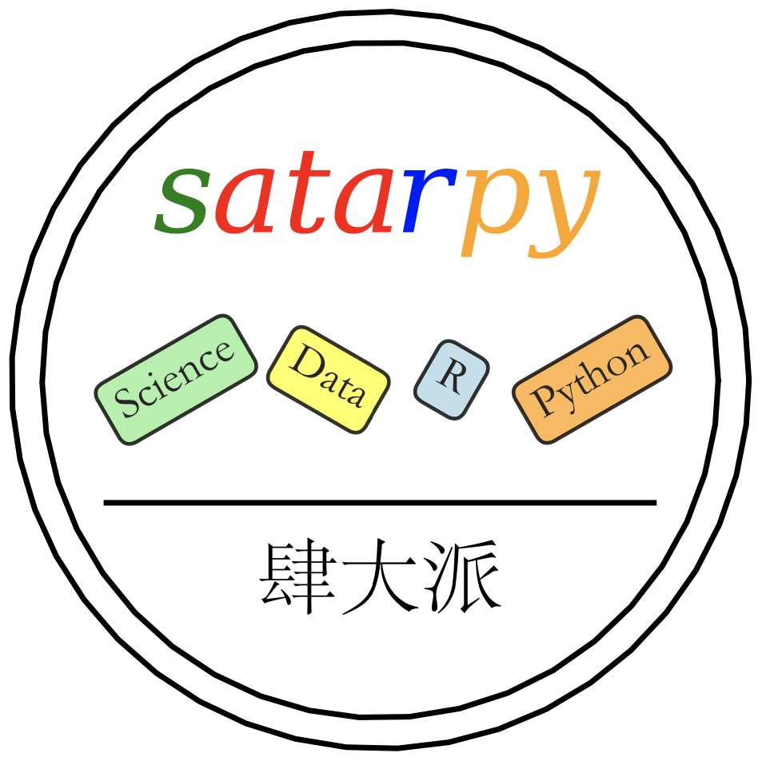

卫生政策与管理实证研究及R语言应用
Application of Empirical Research in Health Policy and Management with R
沈迟 ![]()
前言

这是一本写给卫生政策与管理（Health Policy and Management）专业的硕博士研究生的研究入门工具书，主要是分享一些作者多年来积累的一些经验教训，以便为后来的青年学者快速提高科研素养提供一些参考，少走一些弯路。
卫生政策与管理在国内可以说还是一个比较年轻的学科，卫生管理、卫生政策以及卫生经济学的现代化思潮大约始于20世纪80年代。对于学科在中国发展起到极大推动作用的，当属1991年6月由中国卫生部与世界银行经济发展学院共同发起成立的“中国卫生经济培训与研究网络” （简称“网络”）。网络邀请了包括世界银行和哈佛大学在内的世界级顶尖教授，为来自全国各地的学者讲授前沿的卫生管理和卫生经济理论与方法，网络的系列培训活动一直持续到21世纪初，培养了中国第一代与国际接轨的卫生管理和卫生经济学专家。而这些系统学习了卫生政策与管理和卫生经济学理论方法的老一辈学者，又为我国培养了下一代的卫生政策与管理学专业人才，这些人已经成长为我国医疗卫生管理系统的中坚力量，其中不少已经是各省市政府或卫生行政部门负责人，也不乏国家级人才计划获得者。
由于历史原因，参加网络培训的学者多来自医学院校的流行病学或者卫生统计学专业，其教育背景多为预防医学。受其影响，直到现在绝大部分高校的卫生管理专业仍然设置在公共卫生学院中，这就导致在卫生管理和卫生政策研究方法方面一直是受卫生统计学或者流行病学的影响比较大。但是近些年随着因果推断革命（Causal Inference Revolution）对各个学科在研究方法上的强烈冲击，卫生政策与管理领域的研究在方法学上也开始受到计量经济学非常大的影响。与此同时，随着经济社会水平的不断提高，科学技术的飞速发展，科学研究的问题越来越复杂，学科交叉融合已成为大势所驱。因此，因果推断方法和编程（Coding）技能已成为当代卫生政策与管理学科研究生和青年学者的必备技能之一了。时刻更新自己的知识体系是科研工作者日常生活中的一部分，保持对新知识的学习热情也是一个合格的科研工作者的基本素养。
本书共分为五个章节：
- 第一章：科学知识的获取与管理，主要介绍文献的检索与管理、知识谱系的记录与管理。
- 第二章：数据库操作（Data Manipulate），主要介绍在实证研究中所涉及的有关数据库的增删改查、结构变换等方法。
- 第三章：数据库清洗（Data Clean），主要介绍数据库清洗的步骤和方法。
- 第四章：数据的描述，主要介绍如何在统计软件中进行统计描述及推断，并制作符合统计和学术规范的图表。
- 第五章：实证研究中的因果推断，主要介绍在卫生政策研究中前沿的因果推断方法、注意事项及实现过程。